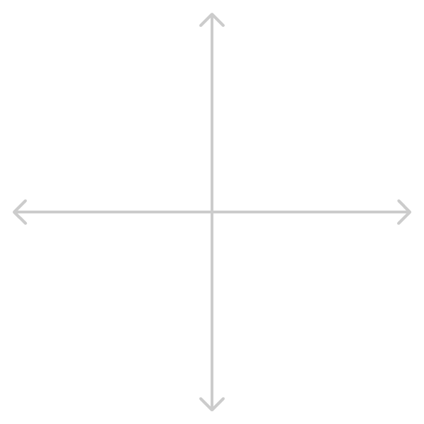
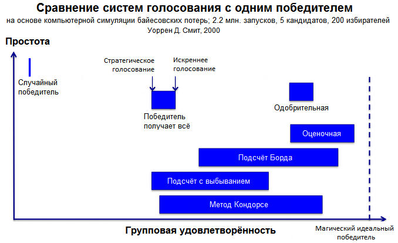

Мы голосуем неправильно. Неважно, выбираем президента или место для шашлыков. В этой статье мы объясним, что не так со схемой «вот несколько вариантов — проголосуй за один» и расскажем про альтернативы. Чтобы разобраться, вам придётся таскать кандидатов и избирателей.
Но обо всём по порядку.
Совместный выбор
Время от времени нам с друзьями, коллегами и согражданами приходится делать совместный выбор. В какой бар пойти, на какую температуру поставить кондиционер и кого избрать президентом.
Всё просто, когда вариантов два. Что построим вместо снесённого дома культуры: кинотеатр или храм? Устроили праздник демократии, собрали голоса — и со счётом 59:55 выиграл храм. Киноманы грустят, но понимают, что проиграли справедливо:
(Чуть позже мы объясним, как это работает)
Проблемы начинаются, когда альтернатив становится три или больше. В другом районе расчистили пустырь и выбирают между библиотекой, бассейном и тренажёрным залом. Провели референдум:
У зожника Игоря есть время погоревать, пока он ездит плавать в другой конец города. Он был бы рад хоть тренажёрке, но ведь в бюллетене можно поставить только одну галочку. Мы никогда не узнаем о его предпочтениях, и он будет страдать вместе с друзьями-спортсменами, хоть их и большинство — 72%.
Большие выборы
Кино и спорт — это жизненно важно, но периодически нам нужно сделать поистине масштабный выбор. Например, избрать президента.
Как проводятся выборы сейчас? Люди приходят на участок, получают бюллетень и отмечают галочкой любимого кандидата. Центризбирком считает галочки — побеждает тот, у кого их больше. Проблема у избирателя та же, что и у Игоря: одной галочки не хватает, чтобы выразить все предпочтения.
Осторожно, спойлеры!
Ситуация, при которой два похожих кандидата крадут голоса друг у друга, позволяя третьему непохожему победить, называется спойлером. Из-за спойлера в выборах побеждает вариант, неугодный большинству — в нашем примере это библиотека.
Самый знаменательный спойлер в политике случился на президентских выборах в США в 2000-м, когда ультралиберальный Ральф Нейдер украл голоса у либерального Альберта Гора, и консервативный Буш-младший пришёл к власти.
Более свежий пример — праймериз республиканской партии. Выбивающийся из ряда Трамп и несколько похожих кандидатов — вы уже понимаете, что это не могло закончиться иначе.
В России и Беларуси от спойлера в последние годы страдают все оппозиционные кандидаты. В Украине — то пророссийские, то проевропейские политики.
Борьба со спойлерами
Есть три главных метода борьбы со спойлерами.
Для избирателя — голосовать стратегически. Катя собирается проголосовать за строительство тренажёрного зала, но по разговорам в подъезде чувствует, что у бассейна больше шансов победить. Чтобы точно похудеть к лету, Катя отдаёт голос за бассейн.
Её подруга-либертарианка Кейт всегда голосует за демократов на президентских выборах в США, лишь бы республиканцы не победили.
Стратегическое голосование — это ложь. Мы никогда не узнаем, чего на самом деле хотят девушки. Их голосами легко манипулировать: достаточно убедить, что у их кандидатов мало шансов на победу.
Для кандидата — снять свою кандидатуру. Берни Сандерс мог пойти на выборы-2016 в качестве независимого кандидата, но отказался в пользу Хиллари Клинтон. Не сделай он этого, победа Трампа была бы неминуема.
Но чем беднее выбор, тем хуже избирателям. Не всем сторонникам Сандерса нравится перспектива голосовать стратегически, поэтому многие не идут на выборы. Явка на президентских выборах в США последние 70 лет колеблется между 50% и 60%. Получается, что почти у половины граждан нет своего кандидата.
Те, кто идут голосовать, делятся на два враждующих лагеря. В разных странах это демократы и республиканцы, националисты и глобалисты, сторонники действующей власти и оппозиционеры. Существующая система голосования постепенно сужает политический спектр до одной оси и подталкивает людей быть радикальнее.
Для организаторов — провести второй тур. Когда ни один из вариантов не набирает больше 50% голосов, организаторы проводят новое голосование среди двух самых популярных вариантов.
Такой подход помог бы спортсменам отстоять большинство и построить бассейн, но второй тур не панацея. Вот мы решаем, кого позвать на корпоратив:
- Макс Корж — 23%
- Вера Брежнева — 21%
- Сплин — 20%
- Мумий Тролль — 14%
- Би-2 — 12%
- Uma2rmaH — 10%
Корж и Брежнева проходят во второй тур, а любители рока — в магазин за берушами.
Получается, что второй тур не спасает от спойлеров, когда вариантов больше трёх. При этом избиратели тратят время, а организаторы ещё и деньги: на проведение второго тура президентских выборов в России закладывается 3 миллиарда рублей (~$50 млн.).
Против системы
У всех доступных методов борьбы со спойлерами есть неприятные побочные эффекты. Разделение общества, низкая явка, власть меньшинства — всего этого хотелось бы избежать.
К счастью, математики последние три века экспериментировали с системами голосования и кое-что придумали. Чтобы улучшить ситуацию, не нужно переубеждать кого-то во взглядах или вводить урок политологии в школах. Достаточно переделать бюллетени и способ их подсчёта.
Австралия и Ирландия уже перешли на альтернативные системы голосования. За пределами политики изменения происходят ещё быстрее.
Плоскость предпочтений
Давайте разберёмся, как работают разные системы голосования, и смоделируем выборы с использованием каждой из них.
Для наглядности нарисуем плоскость предпочтений:
Оси обозначают взгляды: например, слева либеральные — справа консервативные и сверху религиозные — снизу атеистические.
Кинем на плоскость кандидатов и избирателя. Избиратель голосует за кандидата, который ближе всего к его взглядам — всё как в жизни. Попробуйте потаскать:
В реальности предпочтения не плоскость, а многомерное пространство, но мы не будем усложнять.
Теперь посмотрим, как разные системы учитывают предпочтения избирателя.
Победитель получает всё
Этой системой мы пользуемся сейчас. Потягайте избирателя и кандидатов и посмотрите, где оказывается галочка:
Побеждает кандидат, который соберёт больше всех галочек.
Упорядоченные предпочтения
При предпочтительном голосовании избиратели расставляют кандидатов по порядку: любимый идёт первым, ненавистный — последним. Порядок строгий — двух вторых мест быть не может. Потаскайте избирателя и посмотрите, как меняется бюллетень:
Есть много способов считать такие бюллетени, но мы остановимся на трёх основных.
Подсчёт с выбыванием. Идея та же, что и у второго тура традиционных выборов: распределить голоса неудачников среди более успешных коллег. Вот алгоритм:
- Для каждого кандидата считаем количество бюллетеней, где он на первом месте.
- Если кто-то собирает больше 50% бюллетеней, он победил. Конец.
- Если нет, то занявший последнее место выбывает. Вычёркиваем его из всех бюллетеней и считаем всё заново.
- Повторяем, пока кто-то не наберёт 50% или больше.
Австралия и Ирландия применяют систему с выбыванием на национальном уровне, а Сан Франциско, Миннеаполис и Портленд — на местном.
Если схема кажется вам запутанной, то есть способ попроще (в отличие от его названия).
Подсчёт Бордá. Для каждого кандидата суммируем его позиции. Как в гольфе, побеждает набравший меньше всех.
Метод Борда используется в Словении, Исландии, Кирибати и Науру и довольно популярен за пределами политики: с его помощью присуждают спортивные премии и приоритезируют разработку компьютерных программ.
Но если вас интересует способ для настоящих гиков, то...
Подсчёт Кондорсé. Проведём микровыборы между всеми парами кандидатов:
- Представим, что есть только квадрат и круг.
- Посчитаем бюллетени, в которых квадрат выше круга. Допустим, их 88.
- Посчитаем бюллетени, в которых круг выше квадрата — 69 штук.
- Квадрат выиграл микровыборы у круга со счётом 88:69.
- Повторяем процедуру для оставшихся пар: квадрат-треугольник и круг-треугольник.
- Если есть кандидат, который выиграл все микровыборы, то объявляем его победителем.
- Если такого кандидата нет, то мы в дерьме. Придётся всё пересчитать методом Борда или методом с выбыванием.
Получается, что методу Кондорсе нужен план Б. Зато если на шестом шаге определяется победитель, то выбор справедливее некуда.
Метод Кондорсе пока не использует ни одно правительство, зато его любят пиратские партии и люди в очках. Усовершенствованным подсчётом Кондорсе пользуются при разработке операционной системы Ubuntu и языка программирования Haskell.
Без спойлеров
Давайте проверим, страдают ли предпочтительные системы от спойлера. Перетяните круг под треугольник и посмотрите, что будет при разных схемах подсчёта:
Как видите, все предпочтительные системы справляются со спойлером. Вот и всё, правильно? Берём любой метод подсчёта — и проблема решена?
Увы, нет. Предпочтительные системы страдают от других проблем.
Популярность во вред
Возьмём метод с выбыванием и представим такую ситуацию. Треугольник идёт на первом месте, и мы приблизим избирателей ещё ближе к нему. Когда лидер становится ещё более популярным, он точно выиграет выборы, ведь так? Попробуйте сами:
Что произошло? Вначале круг выбывал в первом раунде, и треугольник побеждал более слабый квадрат. Но, когда мы двигаем избирателей ближе к треугольнику, лузер меняется. Теперь квадрат выбывает в первом раунде, а треугольник борется с более сильным кругом и проигрывает.
При подсчёте с выбыванием идущий впереди кандидат может проиграть выборы, став более популярным. Но как часто такое происходит в реальности? Есть пара подтверждённых примеров: парламентские выборы в Австралии и выборы мэра в США. Математики говорят, что проблема будет возникать в 14.5% случаев. К сожалению, мы не можем знать наверняка. Избиркомы не обнародуют бюллетени, поэтому мы не можем воссоздать выборы и проверить на популярность во вред.
Атака клонов
Что будет, если мы подвинем одного проигрывающего кандидата к другому? В традиционной системе спойлер разделит голоса, и лузерам станет только хуже. Подвиньте круг к квадрату и посмотрите, что будет при подсчёте Борда:
Вот, что случилось. Вначале некоторые избиратели расставляли кандидатов в порядке >>, но, когда мы подвинули круг ближе к квадрату, порядок изменился на >>. Это навредило треугольнику достаточно, чтобы уступить квадрату.
Получается, что при подсчёте Борда выгодно клонировать кандидатов. Выбор избирателей не становится богаче, и их предпочтения остаются на месте. Несмотря на это, вместо аутентичного кандидата побеждает один из клонов.
Паралич
Метод Кондорсе ищет кандидата, который победит во всех микровыборах. Но иногда получается «каша», как в камне-ножнице-бумаге: >, >, >. Попробуйте создать такую ситуацию сами:
Отсутствие абсолютного победителя парализует подсчёт Кондорсе. Единственный способ спасти выборы — пересчитать бюллетени другим методом. Но вместе с запасным методом подсчёта мы получаем и его недостатки.
Новая надежда
У каждого способа подсчёта свои недостатки: у системы с выбыванием — популярность во вред, у метода Борда — атака клонов, у подсчёта Кондорсе — паралич.
Но Борда и Кондорсе жили в 18-м веке. Неужели математики с тех пор не придумали ничего лучше? Придумали — новые методы Шульце и Тидемана совершеннее. Проблема в том, что объяснить их рядовому избирателю пока никто не смог. Люди не хотят использовать систему, которую не понимают. Возможно, через 50 лет мы станем образованнее, и тогда у новых методов появится шанс.
Порядок лучше беспорядка
Оставим подсчёт голосов — у предпочтительной системы есть и другая проблема. Ей неудобно пользоваться, когда вариантов много. Чтобы система сработала, нужно расставить всех кандидатов по порядку. А теперь представьте перед собой бланк с 16-ю кандидатами. Вы чувствуете разницу между 14-м и 15-м местом? Будете ломать голову или просто проставите цифры сверху вниз?
Тем не менее, недостатки предпочтительной системы не страшнее спойлера. Если у вас меньше семи кандидатов, смело меняйте традиционную систему на предпочтительную.
Если под рукой есть компьютер, то начните с подсчёта Кондорсе. При параличе используйте систему с выбыванием. Если автоматизировать подсчёт не получается, возьмите метод Борда.
Невозможное возможно
Ладно, не так быстро — у предпочтительной системы есть скелет в шкафу. Экономист Кеннет Эрроу 70 лет назад доказал, что как бы мы ни считали голоса, мы не сможем гарантировать справедливые выборы.
Справедливыми мы называем выборы, которые соблюдают четыре условия:
- Нет избирателя, чей голос в одиночку решает исход выборов.
- Как бы ни проголосовали избиратели, система даст результат. Причём если мы отксерокопируем бюллетени и скормим системе второй раз, то результат будет тем же.
- Если каждый избиратель поставил квадрат выше круга, то круг не может опередить квадрат по итогам выборов.
- Зафиксируем положение круга относительно треугольника в каждом бюллетене. Как бы мы теперь ни двигали квадрат, это не повлияет на положение круга относительно треугольника по итогам выборов.
Условия простые и логичные. Сложно поверить в то, что их можно не соблюсти. Но ни традиционная, ни предпочтительная система не проходят тест на справедливость.
Эта новость не обрекает предпочтительную систему. Эрроу лишь показал, что время от времени система будет работать плохо и что противоядия нет. Этого было достаточно для Нобелевской премии.
Теорема Эрроу носит оптимистичное название «о невозможности коллективного выбора». Но она касается только тех систем, где нужно расставлять кандидатов в строгом порядке. К счастью, бывают и другие системы — о них и поговорим.
Одобрения
Возмьём традиционную систему и дадим избирателям ставить несколько галочек — получится одобрительная система. Избиратель отмечает не только любимого кандидата, но и всех, кто его устраивает. Попробуйте:
Как и в традиционной системе, побеждает обладатель наибольшего числа галочек.
При одобрительной системе похожие кандидаты не мешают и не помогают друг другу. Партии экономят на праймериз и посылают на выборы двух кандидатов, не боясь спойлера. Игорь с Катей со спокойной душой отмечают и бассейн, и тренажёрку.
Когда в следующий раз будете выбирать день для вечеринки с друзьями, пользуйтесь одобрительной системой. Не заставляйте друзей выбирать между четвергом, пятницей и субботой. Позвольте каждому отметить все дни, когда он может.
Одобрительная система самая простая из альтернативных. Для её внедрения не надо менять машины для подсчёта голосов или структуру бюллетеней — достаточно подправить формулировку наверху.
Главный недостаток — неточность. Кейт не может указать, что либертарианцы ей нравятся больше демократов. К счастью, есть система поточнее.
Оценки
Вместо галочек будем ставить кандидатам оценки. Посмотрите, как предпочтения превращаются в голоса:
Побеждает кандидат с самой высокой средней оценкой.
Вы пользуетесь оценочной системой, когда выбираете фильм на Кинопоиске, отель на Букинге или кафе на Форсквере. Для выборов президента система тоже подойдёт.
Ко всем преимуществам одобрительной системы мы добавили точность. К сожалению, у точности есть побочный эффект. Чем больше разбежка между нижней и верхней оценкой, тем уязвимее система к стратегическому голосованию. Хитрые избиратели ставят пятёрку любимчикам и кол остальным, даже если среди альтернатив есть пристойные варианты.
К счастью, избирателям выгодно ставить честные оценки. Либертарианка Кейт сделает себе хуже, если не даст демократам заслуженную троечку. Послушаем нашего избирательного гуру — Кеннета Эрроу:
«Что ж, я склоняюсь к тому, что оценочные системы, где вы раскладываете кандидатов по трём-четырём категориям [оценки от 1 до 3-4], несмотря на все манипуляции, про которые я говорил [стратегическое голосование], вероятно, будут лучшим выбором.»
Лучшей похвалы от математика вы не дождётесь.
Два миллиона голосований
Одобрительная и оценочная системы работают лучше традиционной при искреннем голосовании и не хуже при стратегическом. Но это в теории — а что на практике? Пока системы не использовались для больших выборов, поэтому статистики нет.
Когда нет статистики, помогают компьютерные симуляции. Математик Уоррен Смит из Принстона смоделировал 2 миллиона голосований. Смита интересовало два вопроса:
- Какая система делает избирателей счастливее?
- Как выгоднее голосовать при каждой системе: искренне или стратегически?
Результаты исследования — на графике:
(По графику видно, что его делал настоящий математик, потому что на сварку смотреть приятнее)
Каждой системе соответствует синяя полоса. Чем полоса правее, тем больше счастья система приносит избирателям. Чем выше, тем система проще. Длина полосы показывает, как эффективность системы меняется в зависимости от соотношения избирателей, голосующих стратегически и искренне.
Получается, что чем искреннее избиратели голосуют, тем довольнее они результатами выборов. Самый заметный эффект — при предпочтительной системе. Помните об этом, когда в следующий раз будете заполнять бюллетень.
Оценочная система работает лучше других, независимо от искренности избирателей. Одобрительная подойдёт, когда у избирателей есть стимул голосовать стратегически. Традиционная система всегда проигрывает всем альтернативам.
Шпаргалка
- Спойлер — когда два похожих варианта делят голоса и побеждает третий непохожий.
- Схема «победитель получает всё» страдает от спойлера и побуждает избирателей голосовать стратегически.
- Стратегическое голосование и снятие кандидатов вредны. Второй тур не спасает.
- Для борьбы со спойлерами придумали альтернативные системы: предпочтительную, одобрительную и оценочную.
- В предпочтительной системе избиратели расставляют кандидатов в строгом порядке. Используйте, когда вариантов немного и они разные.
- Когда у избирателя несколько галочек — это одобрения. Подойдут в любой ситуации.
- Если нужна точность, используйте оценки. Помните о стратегическом голосовании и не растягивайте шкалу — оценки от 1 до 3-5 оптимальны.
- Математики и компьютеры — за одобрения и оценки. Традиционная система в симуляциях проигрывает всем конкурентам.
Когда вам в следующий раз предложат проголосовать за один из нескольких вариантов, сбросьте ссылку на эту статью.
Бонус! Симулятор выборов
Чтобы вам было удобнее спорить про лучшую систему, мы сделали симулятор выборов. Смоделируйте интересную ситуацию, объясните и отправьте другу: